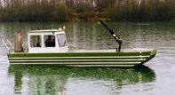

Der Wildsee zwischen Bad Wildbad und Gernsbach ist ein Moorkolk im Nordschwarzwald in Baden-Württemberg. Er gilt als der größte Hochmoorkolk in Deutschland. Das umliegende Plateauhochmoor, das Wildseemoor, ist das größte Hochmoor des Schwarzwalds und gehört zum Natur- und Waldschutzgebiet Kaltenbronn. Der Wildsee befindet sich in einer Höhenlage von 909 m ü. NN auf einer Hochebene zwischen Bad Wildbad, Gernsbach und Forbach. Die Fläche des Sees wird seit den Arbeiten Karl Müllers aus der ersten Hälfte des 20. Jahrhunderts mit 2,3 Hektar angegeben. Dieses Maß umfasst auch die mit Schwingrasen bedeckten Wasserflächen. Aktuellere Daten der Landesanstalt für Umwelt, Messungen und Naturschutz Baden-Württemberg zur offenen Wasserfläche lauten ca. 1,15 ha.[1] Unmittelbar benachbart ist der kleinere Hornsee (0,43 ha). Die nächstgelegene Siedlung mit Straßenanschluss ist Kaltenbronn etwa zwei Kilometer südwestlich. Die Grenze zwischen den Gemeinden Gernsbach (Landkreis Rastatt) und Bad Wildbad (Landkreis Calw) verläuft durch den Wildsee und das zugehörige Naturschutzgebiet. Der Hornsee liegt auf Gernsbacher Gemarkung.